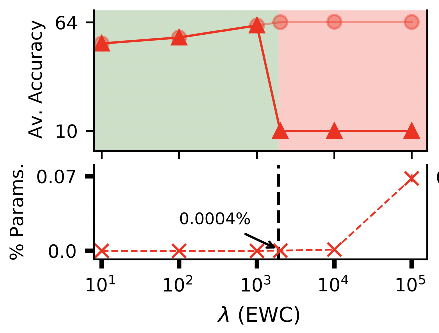

|
Ekdeep Singh Lubana
I am a PhD candidate in EECS Department at the University of Michigan, advised by Robert Dick. I am also affiliated with Harvard Center for Brain Science, where I am mentored by Hidenori Tanaka.
I am generally interested in designing theoretically motivated, grounded algorithms for practical applications of DNNs. I am also very interested in better understanding training dynamics of neural networks, especially via a statistical physics perspective.
I graduated with a Bachelor's degree in ECE from Indian Institute of Technology (IIT), Roorkee in 2019. My research in undergraduate was primarily focused on embedded systems, such as energy-efficient machine vision systems.
Email /
CV /
Google Scholar /
Github
|
|
|
|
Mechanistic Mode Connectivity
Ekdeep Singh Lubana,
Eric J. Bigelow,
Robert P. Dick,
David Krueger, and
Hidenori Tanaka
International Conference on Machine Learning (ICML), 2023
bibtex / arXiv / github
We show models that rely on entirely different mechanisms for making their predictions can exhibit mode connectivity, but generally the ones that are mechanistically similar are linearly connected.
|
|
|
What Shapes the Landscape of Self-Supervised Learning?
Liu Ziyin,
Ekdeep Singh Lubana,
Masahito Ueda, and
Hidenori Tanaka
International Conference on Learning Representations (ICLR), 2023
bibtex / arXiv
We present a highly detailed analysis of the landscape of several self-supervised learning objectives to clarify the role of representational collapse.
|
|
|
Analyzing Data-Centric Properties for Contrastive Learning on Graphs
Puja Trivedi,
Ekdeep Singh Lubana,
Mark Heimann,
Danai Koutra, and
Jay Jayaraman Thiagarajan
Advances in Neural Information Processing Systems (NeurIPS), 2022
bibtex / arXiv / github
We propose a theoretical framework that demonstrates limitations of popular graph augmentation strategies for self-supervised learning.
|
|
|
Orchestra: Unsupervised Federated Learning via Globally Consistent Clustering
Ekdeep Singh Lubana,
Chi Ian Tang,
Fahim Kawsar,
Robert P. Dick, and
Akhil Mathur
International Conference on Machine Learning (ICML), 2022 (Spotlight)
bibtex / arXiv / github / video
We propose an unsupervised learning method that exploits client heterogeneity to enable privacy preserving, SOTA performance unsupervised federated learning.
|
|
|
Beyond BatchNorm: Towards a General Understanding of Normalization in Deep Learning
Ekdeep Singh Lubana,
Hidenori Tanaka, and
Robert P. Dick
Advances in Neural Information Processing Systems (NeurIPS), 2021
bibtex / github / arXiv / video
We develop a general theory to understand the role of normalization layers in improving training dynamics of a neural network at initialization.
|
|

|
How do Quadratic Regularizers Prevent Catastrophic Forgetting: The Role of Interpolation
Ekdeep Singh Lubana,
Puja Trivedi,
Danai Koutra, and
Robert P. Dick
Conference on Lifelong Learning Agents (CoLLAs), 2022
bibtex / github / arXiv / video
(Also presented at ICML Workshop on Theory and Foundations of Continual Learning, 2021)
This work demonstrates how quadratic regularization methods for preventing catastrophic forgetting in deep networks rely on a simple heuristic under-the-hood: Interpolation.
|
|
|
A Gradient Flow Framework For Analyzing Network Pruning
Ekdeep Singh Lubana and
Robert P. Dick
International Conference on Learning Representations (ICLR), 2021 (Spotlight)
bibtex / github / arXiv / video
A unified, theoretically-grounded framework for network pruning that helps justify often used heuristics in the field.
|
|
|
Minimalistic Image Signal Processing for Deep Learning Applications
Ekdeep Singh Lubana,
Robert P. Dick,
Vinayak Aggarwal,
Pyari Mohan Pradhan
International Conference on Image Processing (ICIP), 2019
bibtex /
An image signal processing pipeline that allows use of out-of-the-box deep neural networks on RAW images directly retrieved from image sensors.
|
|
|
Digital Foveation: An Energy-Aware Machine Vision Framework
Ekdeep Singh Lubana and
Robert P. Dick
IEEE Transactions on Computer-Aided Design of Integrated Circuits and System (TCAD), 2018
bibtex /
An energy-efficient machine vision framework inspired by the concept of Fovea in biological vision. Also see follow-up work presented at CVPR workshop, 2020.
|
|
|
Snap: Chlorophyll Concentration Calculator Using RAW Images of Leaves
Ekdeep Singh Lubana,
Mangesh Gurav, and
Maryam Shojaei Baghini
IEEE Sensors, 2018;
Global Winner, Ericsson Innovation Awards 2017
bibtex / news
An efficient imaging system that accurately calculates chlorophyll content in leaves by using RAW images.
|
Website template source available here.
|
|
{kind=link}